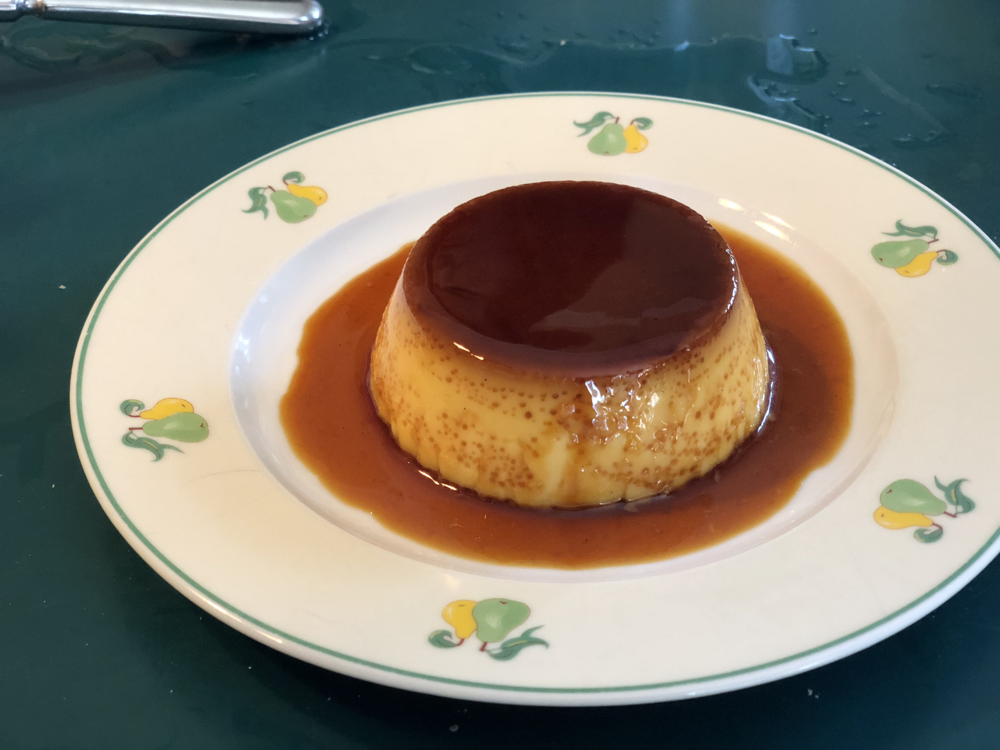

1 / 13

Golden Toast
2 / 13

Golden Toast with Verjuice Lemonade
3 / 13

Fresh Cod with Garlic Jance Sauce
4 / 13

Norse Pie
5 / 13

Potage à la Purée de Pois
6 / 13

Saumon au Bleu
7 / 13

Chicken Suprème Quenelles
8 / 13

Milan Flan
9 / 13

Lemon Soufflé
10 / 13

Pomegranate Poached Pear Gowned in Greens
11 / 13

Ratatouille
12 / 13
Rhapsodie des fruits aux couleurs
13 / 13
Soufflé Cheesecake